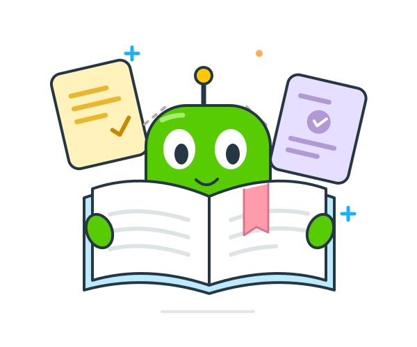
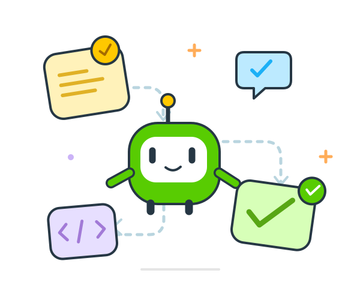
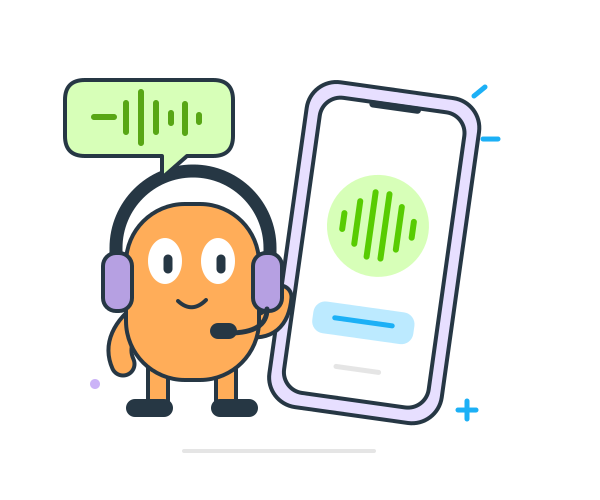
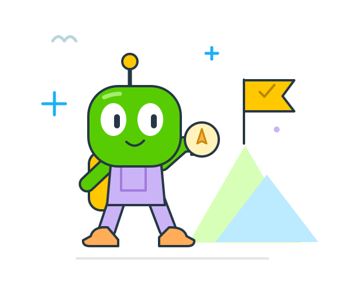

知识 + 好奇心 = 新灵感收藏不吃灰，
知识有回响。
好的知识管理，不止是「存下来」。让散落的笔记和资料连接起来，在你提出问题时，找到新的思考起点。
从一个「如果」出发，探索 AI 产品的不同模样。
以下为概念展示，真实项目持续补充中
知识 + 好奇心 = 新灵感好的知识管理，不止是「存下来」。让散落的笔记和资料连接起来，在你提出问题时，找到新的思考起点。

少一点忙乱，多一点创造。把一段复杂流程，拆成看得懂的小步骤。让 AI 接手重复工作，也让每一步的判断与调整，都在你的掌握之中。

听见你的话，也留意你的停顿。可以停顿，可以改口，也可以想到哪儿说到哪儿。探索一种更自然的语音体验，让表达轻松一点，让技术更有温度。
关于 AI、产品和创造。
先记下来，再慢慢想明白。

下一站？试过才知道。我是田羽峰，一名 AI 产品经理。这里是我在互联网上的一小片空间，用来记录探索、整理思考，也遇见有意思的人。
从真实需求出发，认真理解每一个「为什么」。
用一个小小的实践，换来一次真实的反馈。
给新想法留个位置，也给自己多一点可能。